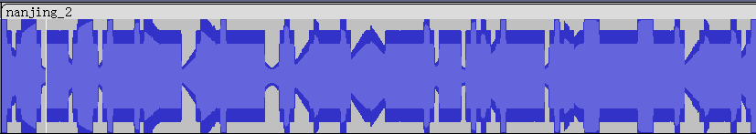
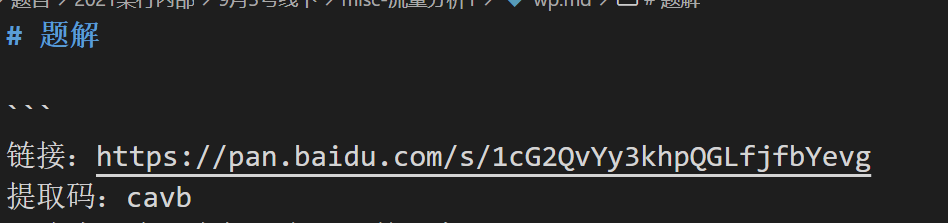

169 我们生活在南京-2
题目：在交流过程中发声音被干扰，于是使用了更加稳定的方法（CW）
下载得到mp3格式文件，根据题目提示，搜索“ 无线电 CW”等关键字，发现CW即等幅电报，一般指代利用摩斯电码进行无线电通联的活动。在audacity里打开附件音频：

尝试切换到频谱，发现比较明显的摩斯电码特征：

不是很长，手动记录一下：
..-. .-.. .- --. -.-. .-- .. ..... ....- - .-. ....- -.. .. - .. ----- -. -- ...-- - .... ----- -..
转码得到：
flagcwi54tr4diti0nm3th0d
flag：flag{cwi54tr4diti0nm3th0d}
170 再见李华1
参见 第18题 ，一样一样的。
flag：flag{Stay hungry, Stay foolish.}
171 1-misc
下载得到加密的zip格式压缩包：

既然密码是生日，那就直接8位数字爆破，考虑到出题人特别长寿的可能性，从19000101开始。可能比生成符合日期格式的字典再爆破要慢一点点，但还是能在可接受的时间里得到结果：

解压得到加密压缩包2.zip和fakeflag.jpg，妈的（删掉）好的套起来了。注意到2.zip里也有个fakeflag.jpg：

两个jpg大小也一样，考虑明文攻击。然而明文攻击一般需要构造与密文包压缩方式和算法和压缩率已知的明文包，如果出题人从自己电脑上找个压缩软件随便打个压缩包就来当谜文包用，那就轮到做题人抓瞎了。很不幸本题就是这么一道题目，用很多版本的WinRAR和7-zip尝试都无法得到符合要求的明文包。总之我把最后成功攻击的明文包放在这里，并呼吁各位出题人，出明文攻击也就出了，但是行行好用存储压缩吧：
然后用ARCHPR进行明文攻击，当三个密钥已经得到，开始爆破密码时就可以手动停止了，然后工具会提示保存已解密的压缩包，点确定就能拿到无加密的2.zip了。
解压得到似乎加密的压缩包3.zip，注释提示没有密码，那就是伪加密，ZipCenOp一把梭：
java -jar ZipCenOp.jar r 3.zip
最后解压得到flag.txt。
flag：flag{159c6275f0015c037e70a118f25b9a99}
172 easy_misc
下载得到加密的zip格式压缩包，尝试爆破一下密码：

解压得到1.png，010editor打开，模板提示CRC错误，由于图片在Windows下可以正常显示，说明宽度正常，爆破一下正确高度：
import struct, binascii
from Crypto.Util.number import bytes_to_long
img = open('C:/Users/Administrator/Desktop/1.png', 'rb').read()
for i in range(0xFFFF):
stream = img[12:20] + struct.pack('>i', i) + img[24:29]
crc = binascii.crc32(stream)
if crc == bytes_to_long(img[29:33]):
print(i, hex(i))
得到：
223 0xdf
修改高度，得到图片：

链接：https://pan.baidu.com/s/1cG2QvYy3khpQGLfjfbYevg
提取码：cavb
妈的（删掉）好的套起来了。
访问这个百度网盘，下载得到file.pcap，wireshark打开，有HTTP先看HTTP：

很明显是在时间盲注。先用tshark把盲注payload提取出来：
tshark -r file.pcap -Y "http and ip.dst == 101.132.155.235" -T fields -e urlencoded-form.value > 1.txt
然后用脚本提取盲注结果。虽然是时间盲注，但实际上不需要判断请求之间间隔的时间。因为从payload来看采用的是简单穷举法，那么对于每一位，只需要提取其穷举过程中该位尝试的最后一个值即可：
data = open('C:/Users/Administrator/Desktop/1.txt', 'r').read().split('\n')[:-1]
flag, index = '', 1
for i in data:
n = int(i.split('limit 0,1),')[1].split(',')[0])
if n != index:
flag += chr(c)
index = n
c = int(i.split(',sleep')[0].split('=')[-1])
flag += chr(c)
print(flag)
运行得到flag。
flag：flag{cd2c3e2fea463ded9af800d7155be7aq}
173 Encode
下载得到txt格式文件，内容：
4O595954494Q32515046324757595N534R52415653334357474R4N575955544R4O5N4Q46434S4O59474253464Q5N444R4Q51334557524O5N4S424944473542554O595N44534O324R49565746515532464O49345649564O464R4R494543504N35
看下其中包含的字符：
print(set(list(s)))
# {'6', 'O', '7', '5', 'R', 'N', '4', '1', 'Q', '9', '3', '0', '2', 'S'}
有九个数字以及NOQRS五个字母，注意到N-S在字母表里与A-F刚好处于对称位置，很明显这是一个十六进制字符串被ROT13加密后的结果。那么后续用Cyberchef梭就行了，解码步骤依次是：
ROT13 HEX(base16) base32 base64 base85
得到flag。
flag：flag{W0w_y0u_c4n_rea11y_enc0d1ng!}
174 Wire1
下载得到pcapng格式文件，wireshark打开，有HTTP先看HTTP：

很明显又是在布尔盲注。
先用tshark提取盲注payload：
tshark -r timu.pcapng -Y "http and ip.dst == 192.168.246.1" -T fields -e http.request.uri.query > 1.txt
然后写个脚本处理每一行，原理类似上题：
data = open('C:/Users/Administrator/Desktop/1.txt', 'r').read().split('\n')[:-1]
flag, index = '', 1
for i in data:
n = int(i.split('%20t),')[1].split(',')[0])
if n != index:
flag += chr(c)
index = n
c = int(i.split('=')[-1].split('-')[0])
flag += chr(c)
print(flag)
运行得到flag。
flag：flag{w1reshARK_ez_1sntit}